Most Popular Swiss Foods You Need To Try
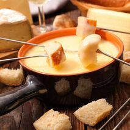
Cheese Fondue
Melted cheese with bread cubes. The bread cubes are picked up on the fork and swivelled in the melted cheese, which is served in a traditional ceramic fondue pot called ‘caquelon’.
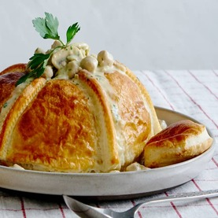
Luzerner Chugelipastete
A vol-au-vent filled with sausage meat balls and mushrooms in a white sauce.
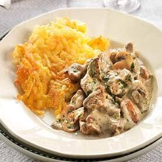
Zurcher Geschnetzeltes
A veal dish, sometimes also containing veal liver and mushrooms, served with a cream sauce and rosti is well-known throughout Switzerland.
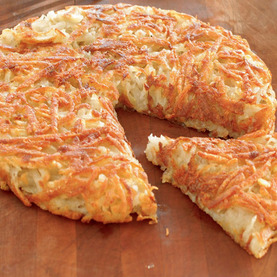
Rosti
A flat, hot cake made of grated, cooked jacket or raw potatoes and fried in hot butter or fat. The dish is bound by nothing apart from the starch contained in the potatoes.
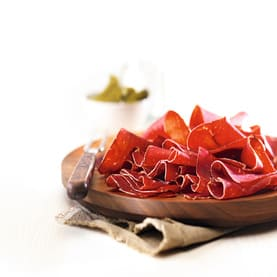
Bundnerfleisch
An sir-dried raw salt meat made from beef leg. It usually rectangular, of a firm consistency and a deep red color in the centre. It produced in the canton of Grabunden, Switzerland.
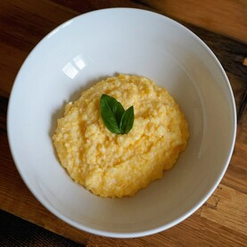
Polenta
A dish of boiled cornmeal which is mixed with cheese and served as a main dish or accompaniment (typically, for example, with rabit cut into strips) comes from the Ticino.
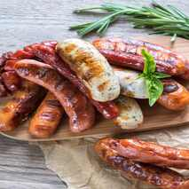
Bratwurst
A type of German sausage made from pork or, less commonly, beef or veal. The name is derived from the Old High German Bratwurst, from brat-, finely chopped meat, and Wurst, sausage. This sausage is best eaten without mustard because this allows the full aroma of the meat to unfold.
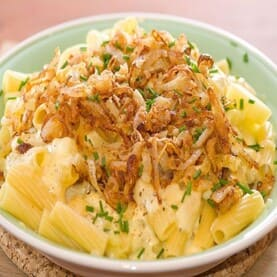
Alplermagronen
It is translated ‘the Alpine macaroni’ is a rustic Swiss dish. It contains macaroni, potatoes, cheese, cream and roasted onions, hail from Central Switzerland as do a whole variety of cheese dishes.
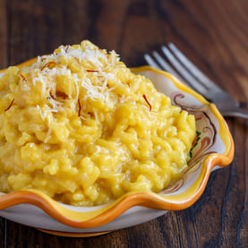
Saffron Risotto
It mainly known as a traditional dish of Ticino and is usually served with a Luganighe sausage, a raw sausage made with pork, spices, and red wine.
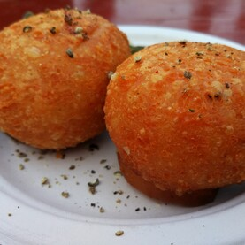
Malakoff
Is a ball fried cheese typically found in Western Switzerland, more specifically in the villages on the shores of Lake Geneva. It typically served as a first course and enjoyed with served cornichons, pickled onions, and mustard.
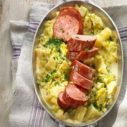
Papet Vaudois
The dish consists of a mixture of potatoes and leeks cooked in water and white wine cooked with cabbage sausage. The Vaudois (people of “the land of Vaud”) like to offer this specialty to their foreign guests.
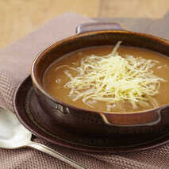
Basler Flour Soup
The delicious soup is said to have been created accidentally because of a small mistake by the chef: the creator was distracted by talking and walked away, causing the flour to cook brown in the pot. It traditionally served during the carnival (Fasnacht).
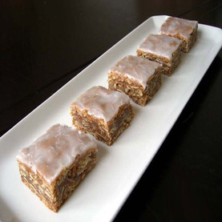
Bernese Haselnusslebkuchen
It also called hazelnut gingerbread is in fact not really a gingerbread at all as it doesn’t contain many of typical gingerbread ingredients. It is created without a grain of flour or drop of water. During Christmas, the Swiss ancestors put pepper on it.
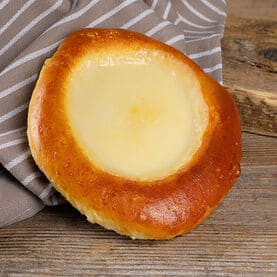
Salee au Sucre
Is a sweet round bun topped with a mixture of sugar, cream, and vanilla and/or butter and/or beaten egg. This bun is specialty of Vaud, you can find in any bakery.